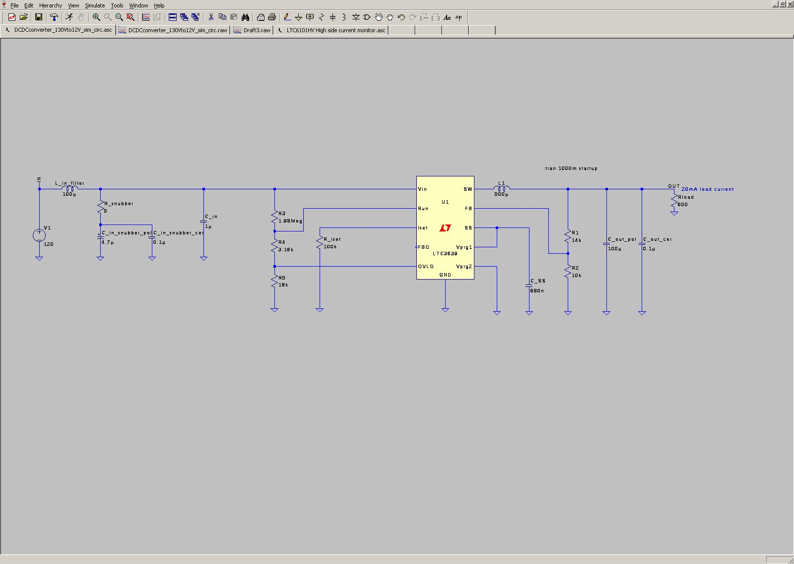

Description
Introduction
The item is a buck converter power supply that is fed with 120VDC and converts this input into 12VDC.
The maximum load current is 20mA. The item is intended mainly for household use, but can see operation outdoors.
Specific requirements are shown below:
Requirements:
- Voltage input
- 120V nominal
- 130V maximum
- 110V minimum
- Current available
- 10A maximum
- Voltage Output
- Nominal output voltage: 12V
- Allowable ripple voltage: 50mV peak to peak
- Current Output
- Minimum load: 0 Amps
- Maximum load: 20 mA
- Environment
- Interfaces to household wiring
- Will see outdoor use
- Exposed to lightning
- Must survive reversed input voltage
- Must survive overvoltage and undervoltage transients
- Must provide 20ms output holdup at maximum load
- Efficiency
- Must be greater than 90%
Circuit Schematic

Discussion:
The power supply control IC was chosen to be the Linear Technology LTC3639 High-Efficiency, 150V, 100mA,
Synchronous, Step-Down Regulator. The IC has internal high-side and low-side MOSFETs and compensation.
The output voltage is programmed by selecting appropriate resistors for the feedback resistor divider string.
Most importantly, during light load operation, the IC transitions into Burst Mode operation, which is a proprietart feature of Linear Technology.
During Burst Mode Operation, the IC skips as many cycles as needed, while providing bursts in between, to maintain the set output voltage.
Simulation Output
120V to 12V 100mA Buck Simulation